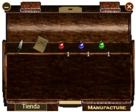

Captura del juego a 3x. Verde: área útil propuesta. Rojo: zona de marco/bolas donde no se pinta contenido. Cruces amarillas: centro de cada bola, (9,9) y (w−9,9) en coordenadas lógicas.

| Elemento | Medido | Ideal |
|---|---|---|
| Bola izquierda | centro ≈ (13,13) px captura | (9,9) lógico ✔ |
| Bola derecha | centro ≈ (27,13) px captura | (w−9,9) ✔ |
| Glifo "x" | centrado | — |
| Glifo "−" | ≈1.3 px lógicos por debajo | dibujar en cy con trazo de 2 px |
drawFrameBall (uistyle.js) cambiar el "−" de cy+0.5 a cy-0.5 con lineWidth 2, para que el trazo quede en el centro exacto tras el redondeo. Pendiente de aprobación; no se ha tocado producción.